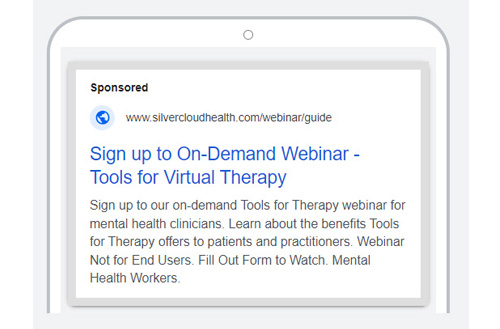

About
The Tools for Therapy campaign, launched in late 2023 and extending into 2024, was aimed at promoting SilverCloud's digital platform that enhances virtual therapy sessions for mental health professionals. The platform supports a range of mental health conditions such as social anxiety and OCD by offering CBT-based tools to streamline tasks, improve collaboration, and integrate with case management systems. This case study explores the omnichannel marketing approach used and how key optimizations enhanced the campaign’s reach, engagement, and conversions.
Campaign Structure and Strategy
1. Multichannel Approach
SilverCloud implemented an omnichannel marketing strategy to engage mental health professionals and decision-makers across multiple digital platforms, including Google Ads, LinkedIn, SEO, email marketing, social media, and webinars. Each phase of the campaign was designed to match different stages of the buyer’s journey, focusing on driving awareness, engagement, and conversions.
Key Campaign Assets:
• Tools for Therapy Product page
• Whitepaper: “The Future of Therapy”
• Blog Post: "Improving the patient experience by solving the challenges of digital therapy"
• Ebook Guide: “The Next Step for Modern Therapy Services”
• Case Study: Tools for Therapy in NHS Step 3 care services
• Webinar: “The Next Step to Modern Therapy Services”
• Video Animation: Used for paid video ads
Each asset had its own dedicated landing page to facilitate easy access and streamline lead capture, while assets were integrated into SilverCloud's demand generation cards and content library to ensure visibility across multiple channels.
2. Optimization Tactics
To maximize performance, SilverCloud employed several key optimizations:
• A/B Testing: Multiple creatives and bidding strategies were tested to improve click-through rates (CTR) and reduce the cost per acquisition (CPA).
• Retargeting Campaigns: Google Display and YouTube ads retargeted visitors to Tools for Therapy content pages, helping drive users back to the website to complete a conversion.
• Exit Pop-Ups: Added to key pages to reduce bounce rates and capture more leads.
Campaign Perfomance
Campaign Performance
Google Ads
The Google Ads campaign combined search, display, and video ads to drive traffic, focusing on non-branded search terms for the Tools for Therapy platform and implementation guide. The ads targeted B2B healthcare keywords such as "digital therapy solutions" and "mental health case management systems," ensuring relevance to NHS professionals and decision-makers.
Key Metrics:
• Conversion Rate: 7.65%
• Top Performing Campaign: Implementation Guide campaign, achieving a conversion rate of 9.22%, indicating strong resonance with educational content.
• Display and YouTube Retargeting: Successfully brought back visitors to convert at a lower cost, making them a critical part of the overall strategy.
Optimization Efforts:
• A/B Testing Creatives: Identified the most effective ad messaging and visuals.
• Match Type Testing: Helped refine audience targeting and reduce the cost per conversion.
• Maximizing Conversions: Later phases focused on maximizing conversions by adjusting bid strategies for the most engaged audience segments.
LinkedIn Ads
The LinkedIn campaign targeted healthcare professionals in NHS Talking Therapies and secondary care. It was divided into phases, with Phase 1 driving traffic to key assets and Phase 2 retargeting engaged users to encourage demo requests.
Key Results:
• Conversion Rate (Phase 1): 8.49%
• Cost per MQL: Gradually reduced through manual CPC and bid strategy optimization, improving the campaign’s cost-effectiveness.
Phased Approach:
• Phase 1: Focused on existing customers and NHS Talking Therapies professionals, driving engagement with content like the Tools for Therapy Guide and blog posts.
• Phase 2: Retargeted Phase 1 users to convert them into demo requests, resulting in higher conversion rates than cold traffic.
Optimization Tactics:
• A/B Testing: Tested both creatives and bidding strategies to identify what resonated best with the target audience.
• Manual CPC Testing: Initially helped control costs, with later phases optimizing for cost per acquisition by reallocating budget to high-performing segments.
-

- 
-

-

-

Campaign Assets
Web page, Whitepaper, Blog Post, E-book, Webinar, Video Animation
Search Engine Marketing
Google AdWords, Search Engine Optimization, A/B testing, Retargeting
Remarketing
Adroll, Google Remarketing, Facebook and Twitter Custom Audiences
Content Marketing
Working with the client, we curated an editorial calendar and created content pieces for a number of digital assets; we developed and constantly updated the website's News section
LinkedIn Ads
Image ads, Video ads, Lead Gen ads, Retargeting, A/B Testing
Lead Nurturing & Scoring
Email marketing and nurture flows
Lead Nurturing and Scoring
SilverCloud designed structured nurture flows to guide prospects through the buyer's journey, from top-of-funnel (TOFU) content like the implementation guide to middle-of-funnel (MOFU) and bottom-of-funnel (BOFU) content like case studies and product demos. Lead scoring allowed the sales team to prioritize MQLs, while prospects who did not convert were reintroduced into the nurture flow to maintain continuous engagement
.
Campaign Results
The Tools for Therapy campaign drove impressive engagement and lead generation, showing steady growth in key metrics over time.
Key Metrics (July 2024):
• Leads: Over 400
• MQLs: Significant number of marketing-qualified leads
• Webinar Registrations: More than 250, with a notable portion converting to MQLs
• Whitepaper Form Submissions: Hundreds of downloads, signaling strong interest in educational content
End of 2023 Results:
• Contacts Added: More than 240 new contacts
• Webinar Sign-Ups: Over 230, reflecting high interest in the educational value of the campaign’s webinars
• Asset Downloads: Substantial download numbers, demonstrating the effectiveness of the campaign’s content strategy
Conclusion
The success of the Tools for Therapy campaign highlighted the power of a multi-phase, omnichannel marketing approach. By leveraging diverse content assets, retargeting strategies, and lead nurturing tactics, SilverCloud effectively engaged healthcare decision-makers and drove meaningful conversions. The combination of continuous optimization, strategic audience targeting, and structured lead flows proved vital to the campaign’s success, offering valuable lessons for future initiatives in the healthcare B2B space.